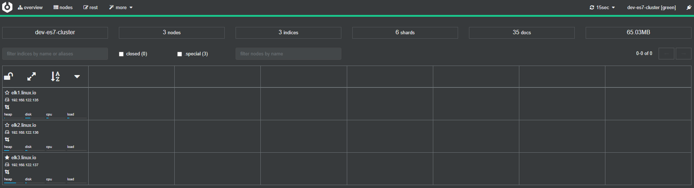
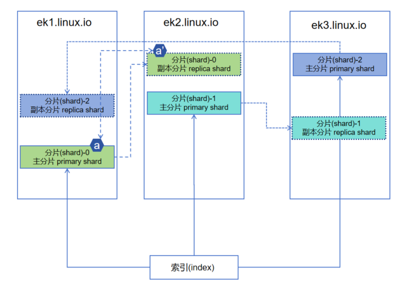

1. 日志采集
1.1. elasticsearch
elasticsearch 是一个高度可扩展的开源全文搜索和分析引擎，它可实现数据的实时全文搜索、支持分布式可实现高可用、提供 API 接口，可以处理大规模日志数据，比如 Nginx、Tomcat、系统日志等功能。Elasticsearch 使用 Java 语言开发，是建立在全文搜索引擎 Apache Lucene 基础之上的搜索引擎。
Elasticsearch 的特点
实时搜索、实时分析
分布式架构、实时文件存储
文档导向，所有对象都是文档
高可用，易扩展，支持集群，分片与复制
接口友好，支持 json
1.1.1. 单点安装
rpm 安装
下载软件包
wget https://mirrors.tuna.tsinghua.edu.cn/elasticstack/7.x/yum/7.17.5/elasticsearch-7.17.5-x86_64.rpm
安装
yum localinstall -y ./elasticsearch-7.17.5-x86_64.rpm
准备日志目录和数据目录
install -d /data/apps/es7/{data,logs} -o elasticsearch -g elasticsearch
配置
vim /etc/elasticsearch/elasticsearch.yml
node.name: elk1.linux.io
path.data: /data/apps/es7/data
path.logs: /data/apps/es7/logs
network.host: 192.168.122.135
discovery.seed_hosts: ["elk1.linux.io"]
启动服务
systemctl enable elasticsearch --now
验证
curl elk1.linux.io:9200
{
"name" : "elk1.linux.io",
"cluster_name" : "elasticsearch",
"cluster_uuid" : "lO8uc1IrQAyBKR5579r8OA",
"version" : {
"number" : "7.17.5",
"build_flavor" : "default",
"build_type" : "rpm",
"build_hash" : "8d61b4f7ddf931f219e3745f295ed2bbc50c8e84",
"build_date" : "2022-06-23T21:57:28.736740635Z",
"build_snapshot" : false,
"lucene_version" : "8.11.1",
"minimum_wire_compatibility_version" : "6.8.0",
"minimum_index_compatibility_version" : "6.0.0-beta1"
},
"tagline" : "You Know, for Search"
}
预编译二进制安装
下载软件包
wget https://artifacts.elastic.co/downloads/elasticsearch/elasticsearch-7.17.5-linux-x86_64.tar.gz
解压
tar -xf elasticsearch-7.17.5-linux-x86_64.tar.gz -C /data/apps/
cd /data/apps/
ln -sv elasticsearch-7.17.5/ elasticsearch
准备日志目录和数据目录
useradd elastic
install -d /data/apps/elasticsearch/{data,logs} -o elastic -g elastic
配置
vim /data/apps/elasticsearch/config/elasticsearch.yml
node.name: elk2.linux.io
path.data: /data/apps/elasticsearch/data
path.logs: /data/apps/elasticsearch/logs
network.host: 192.168.122.136
discovery.seed_hosts: ["elk2.linux.io"]
启动服务
chown -R elastic.elastic /data/apps/elasticsearch
chown -R elastic.elastic /data/apps/elasticsearch-7.17.5/
su - elastic -c '/data/apps/elasticsearch-7.17.5/bin/elasticsearch -d'
验证
curl elk2.linux.io:9200
{
"name" : "elk2.linux.io",
"cluster_name" : "elasticsearch",
"cluster_uuid" : "Dw5L0Fb5Ska6RomQhspT2Q",
"version" : {
"number" : "7.17.5",
"build_flavor" : "default",
"build_type" : "tar",
"build_hash" : "8d61b4f7ddf931f219e3745f295ed2bbc50c8e84",
"build_date" : "2022-06-23T21:57:28.736740635Z",
"build_snapshot" : false,
"lucene_version" : "8.11.1",
"minimum_wire_compatibility_version" : "6.8.0",
"minimum_index_compatibility_version" : "6.0.0-beta1"
},
"tagline" : "You Know, for Search"
}
1.1.2. 集群安装
| 主机名 | IP 地址 |
|---|---|
| elk1.linux.io | 192.168.122.135 |
| elk2.linux.io | 192.168.122.136 |
| elk3.linux.io | 192.168.122.137 |
主机名解析
cat >> /etc/hosts <<'EOF'
192.168.122.135 elk1.linux.io
192.168.122.136 elk2.linux.io
192.168.122.137 elk3.linux.io
EOF
所有节点针对ES基础调优
cat > /etc/security/limits.d/es7.conf <<EOF
* soft nofile 65535
* hard nofile 131070
* hard nproc 8192
EOF
echo "vm.max_map_count=524288" >> /etc/sysctl.d/es.conf
所有节点解压安装包
tar -xf elasticsearch-7.17.5-linux-x86_64.tar.gz -C /data/apps/
所有节点创建运行ES服务的用户和数据目录
useradd elastic
install -d /data/apps/elasticsearch-7.17.5/{data,logs} -o elastic -g elastic
chown -R elastic.elastic /data/apps/elasticsearch-7.17.5
配置
vim /data/apps/elasticsearch-7.17.5/config/elasticsearch.yml
cluster.name: dev-es7-cluster # 所有节点保持一致
node.name: elk1.linux.io # 修改为各自的主机名
path.data: /data/apps/elasticsearch-7.17.5/data
path.logs: /data/apps/elasticsearch-7.17.5/logs
network.host: 0.0.0.0 # 如果有多块网卡，请明确指定IP
discovery.seed_hosts: ["elk1.linux.io", "elk2.linux.io", "elk3.linux.io"]
cluster.initial_master_nodes: ["elk1.linux.io", "elk2.linux.io", "elk3.linux.io"]
使用Unit风格管理服务
cat > /usr/lib/systemd/system/es7.service <<EOF
[Unit]
Description=dev service es7
After=network.target
[Service]
Type=simple
Environment=ES_HOME=/data/apps/elasticsearch-7.17.5/jdk/
Environment=ES_PATH_CONF=data/apps/elasticsearch-7.17.5/config
ExecStart=/data/apps/elasticsearch-7.17.5/bin/elasticsearch
User=elastic
Group=elastic
LimitNOFILE=131070
LimitNPROC=4096
[Install]
WantedBy=multi-user.target
EOF
systemctl daemon-reload
systemctl enable es7 --now
验证
curl elk2.linux.io:9200
{
"name" : "elk2.linux.io",
"cluster_name" : "dev-es7-cluster", #
"cluster_uuid" : "0Efxhjq_S5uddZfIPLXLqQ", # 确保所有节点都一致
"version" : {
"number" : "7.17.5",
"build_flavor" : "default",
"build_type" : "tar",
"build_hash" : "8d61b4f7ddf931f219e3745f295ed2bbc50c8e84",
"build_date" : "2022-06-23T21:57:28.736740635Z",
"build_snapshot" : false,
"lucene_version" : "8.11.1",
"minimum_wire_compatibility_version" : "6.8.0",
"minimum_index_compatibility_version" : "6.0.0-beta1"
},
"tagline" : "You Know, for Search"
}
curl elk2.linux.io:9200/_cat/nodes
192.168.122.137 42 96 0 0.02 0.07 0.15 cdfhilmrstw * elk3.linux.io
192.168.122.136 20 91 8 0.21 0.24 0.33 cdfhilmrstw - elk2.linux.io
192.168.122.135 7 97 10 0.21 0.39 0.74 cdfhilmrstw - elk1.linux.io
1.1.3. 启动失败解决方案
报错：
max file descriptors [4096] for elasticsearch process is too low, increase to at least [65535]解决方案：修改文件打开数量上线，修改后需要断开会话
vim /etc/security/limits.d/es7.conf
* soft nofile 65535
* hard nofile 131070
* hard nproc 8192
ulimit -Sn
65535
ulimit -Hn
131070
报错：
max virtual memory areas vm.max_map_count [65530] is too low, increase to at least [262144]解决方案： 调大内核虚拟内存映射值
vim /etc/sysctl.d/es.conf
vm.max_map_count=524288
sysctl -f /etc/sysctl.d/es.conf
sysctl -q vm.max_map_count
vm.max_map_count = 524288
报错：
java.net.UnknownHostException: elk2.linux.io解决办法：hosts文件主机名添加解析
报错：
"cluster_uuid" : "_na_",解决办法：停止进程，然后删除脏数据，添加配置 cluster.initial_master_nodes，重新启动服务
# 删除脏数据，可不操作，仅适用于新集群
pkill -9 java
rm -rf /data/apps/elasticsearch/{data/*,logs/*}
cluster.initial_master_nodes: ["elk2.linux.io"]
1.1.4. Cerebro 管理程序
官网： https://github.com/lmenezes/cerebro
Cerebro 是一个开源的elsticsearch web 管理工具 ，需要 java1.8 或者更高版本。
下载
wget https://github.com/lmenezes/cerebro/releases/download/v0.8.1/cerebro-0.8.1.tgz
安装
tar -xf cerebro-0.8.1.tgz -C /data/apps
配置
cd /data/apps/cerebro-0.8.1/
vim conf/application.conf
'''
auth = {
type: basic
settings: {
username = "admin"
password = "1234"
}
}
...
hosts = [
{
host = "http://192.168.122.135:9200"
name = "dev-es7-cluster"
# headers-whitelist = [ "x-proxy-user", "x-proxy-roles", "X-Forwarded-For" ]
}
# Example of host with authentication
#{
# host = "http://some-authenticated-host:9200"
# name = "Secured Cluster"
# auth = {
# username = "username"
# password = "secret-password"
# }
#}
]
启动服务
nohup ./bin/cerebro &
访问web
默认的访问地址为：http://IP:9000

1.1.5. Elasticsearch相关术语

MySQL跟ElasticSearch对比
| Elasticsearch | MySQL |
|---|---|
| Index（索引） | Datobase（数据库） |
| Type（类型） | Table（数据表） |
| Document（文档） | Row（行） |
| Mapping | Schema |
| Fields（字段） | Column（列） |
index（索引）: 一个索引就是一个拥有几分相似特征的文档的集合
type（类型）: 一个类型是索引的一个逻辑上的分类/分区,个索引中可以定义一种或多种类型
document（文档）: 文档是一个可被索引的基础信息单元，也就是一条数据。相当于MySQL中的一条记录
field（字段）: 对文档数据根据不同属性进行的分类标识
mapping（映射）: mapping是处理数据的方式和规则方面做一些限制，如某个字段的数据类型、默认值、分析器、是否被索引等
cluster（集群）: 一个集群就是由一个或多个节点组织在一起，它们共同持有整个的数据，并一起提供索引和搜索功能。
node（节点）: 一个节点是集群中的一个服务器，作为集群的一部分，它存储数据，参与集群的索引和搜索功能。
shard（分片）: 提供了将索引划分成多份的能力，这些份就叫做分片，允许你在分片之上进行分布式的、并行的操作，进而提高性能/吞吐量
replicas（副本）： 创建分片的一份或多份备份，这些备份叫做复制分片，或者直接叫副本。在分片/节点失败的情况下，提供了高可用性
allocation（分配）： 将分片分配给某个节点的过程，包括分配主分片或者副本。如果是副本，还包含从主分片复制数据的过程。这个过程是由master节点完成的。